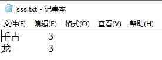
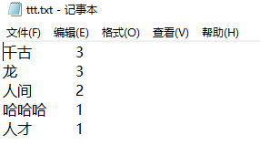

# -*- coding: utf-8 -*-
#spyder (python 3.7)1. 统计字符(可以在jieba分词之后使用)
from collections import Counter
from operator import itemgetter
# txt_list可以写成函数参数进行导入
txt_list = ['千古','人间','人间','龙','龙','龙','哈哈哈','人才','千古','千古']
c = Counter()
for x in txt_list:
if len(x) >= 1:
if x == '\r\n' or x == '\n' or x == ' ':
continue
else:
c[x] += 1
print('常用词频统计结果: \n')
for (k, v) in c.most_common(4): #打印排名前四位
print('%s%s %s %d' % (' ' * (3 ), k, '*' * 3, v))
# 按照词频数从大到小打印
d = sorted(c.items(),key=itemgetter(1),reverse = True)
for ss,tt in d:
out_words=ss + '\t' + str(tt)
print(out_words)2. 多次覆盖，循环写入文件
#写入文件，多次写入，后一次覆盖前一次，但是out_words本身是在叠加的
#即：第一次写入的是：千古\t3\n;第二次写入的是：千古\t3\n龙\t3\n，覆盖上一次的数据;
#第三次是：千古\t3\n龙\t3\n人间\t2\n，继续覆盖上一次的数据
out_words = ''
for ss,tt in d:
out_words=out_words + ss + '\t' + str(tt) + '\n'
with open(r".\sss.txt", "w",encoding='utf-8') as f:
f.write(out_words+'\n')比如，循环两次的结果是：

3. 一次性写入文件，中间不会覆盖和多次写入；但是如果重复运行代码，则会覆盖之前的全部内容，一次性重新写入所有新内容
out_words = ''
for ss,tt in d:
out_words=out_words + ss + '\t' + str(tt) + '\n'
with open(r".\ttt.txt", "w",encoding='utf-8') as f:
f.write(out_words+'\n')